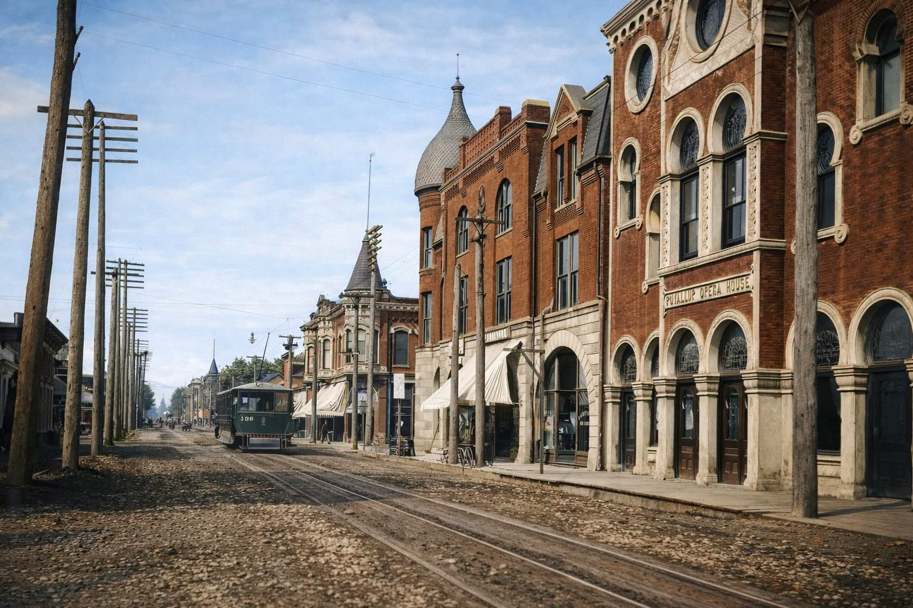
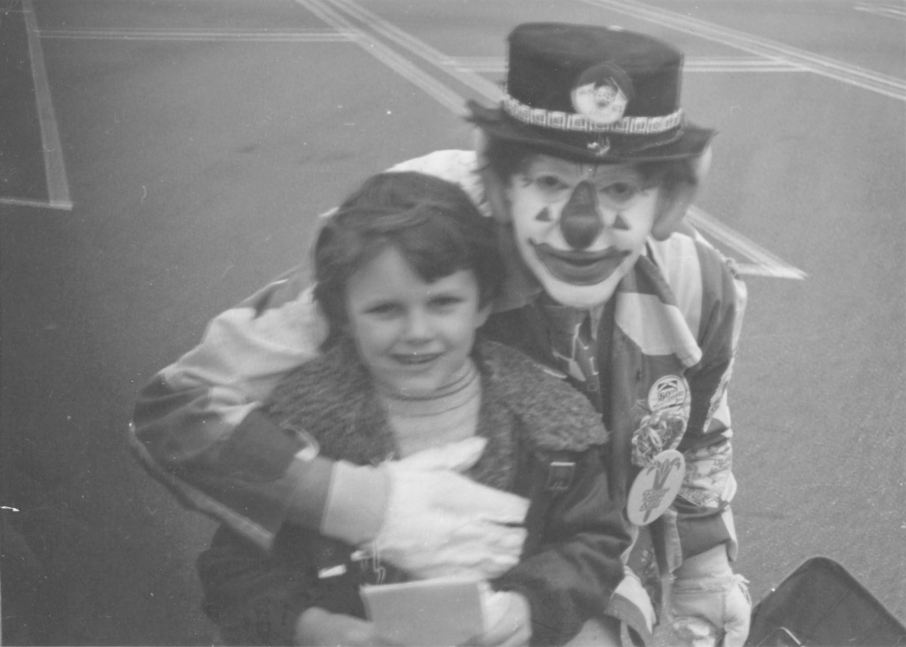
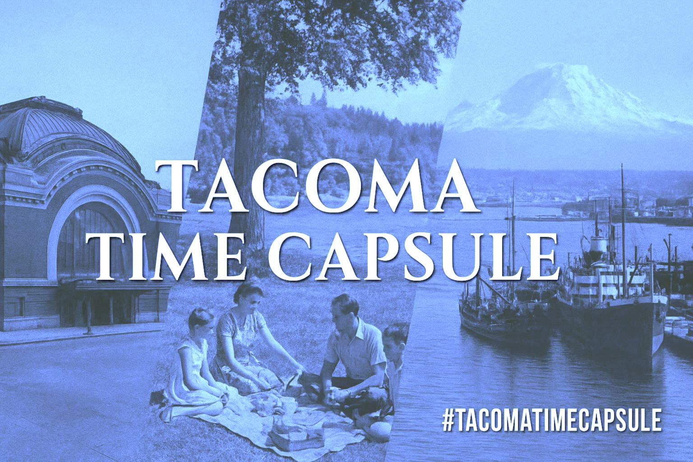
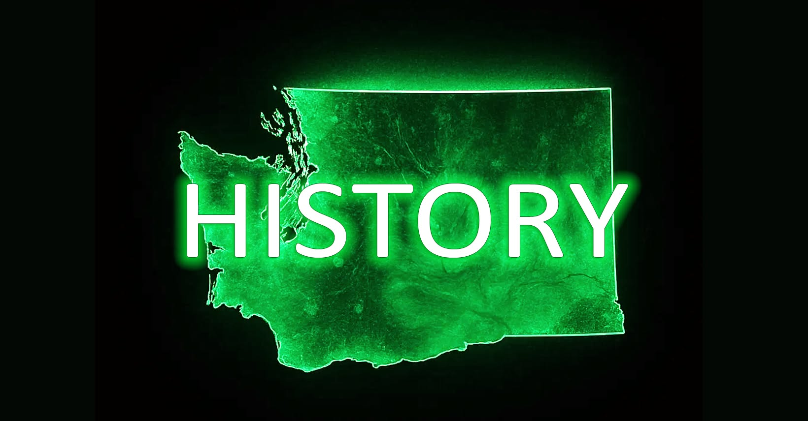

THE ROBERT R. RILEY COLLECTION · VOLUME FIVE
A lifetime
in pictures.
Signs made to be seen. The people and places behind the work. An artist's eye, a maker's hands, and a lifetime of stories worth keeping.
Open the photo album/download%20(8).png)


The pictures are only the beginning.
Behind the photographs are finished projects, hands-on craftsmanship, a lifetime of memories and the local-history stories that bring communities together. Choose a chapter below to see what’s inside.
Discover the local-history stories


Where would you like to go next?
Each destination opens another part of the portfolio. You can always return to the Photo Album.
Through the years.
Through the lens.
Here are the featured images and the photographs that might not have found a place in the main exhibition. No particular order is required: linger wherever something catches your eye.
There’s so much more to see.
You’ve only seen the opening photographs. Keep exploring the pictures, projects and memories in this collection.
More photographs are already here — select the gold bar to reveal the next part of the collection.

The communities
behind the stories.
Alongside my own historical storytelling, I maintain Facebook communities where people share photographs, rediscover familiar places, and keep memories alive.
Each collection below is its own community. Select a photograph or card to visit that group on Facebook.

TACOMA HISTORYTacoma Time CapsuleTacoma landmarks, lost places, photographs and memories spanning generations.Explore this Facebook community
STATEWIDE HISTORYWashington State HistoryDiscovering the people, places and remarkable stories of Washington State.Explore this Facebook community HISTORY BEYOND WASHINGTONRob Riley’s Time VaultA wider journey through historical images and memorable stories from around the world.Explore this Facebook community PUYALLUP HISTORYPuyallup Time CapsuleThe streets, businesses and people of Puyallup, remembered and rediscovered.Explore this Facebook community 1970s NOSTALGIAThe 70’s ❤️A colorful return to the culture, music and everyday life of the 1970s.Explore this Facebook community.jpg) 1980s NOSTALGIAI ❤️ 80sRevisiting the pop culture, sights, sounds and memories of the 1980s.Explore this Facebook community
1980s NOSTALGIAI ❤️ 80sRevisiting the pop culture, sights, sounds and memories of the 1980s.Explore this Facebook community These are the actual group destinations. Their titles and banner artwork are shown together so you can see exactly which community you're opening.
There's always
more to the story.
Come back for another photograph, another project and another memory.